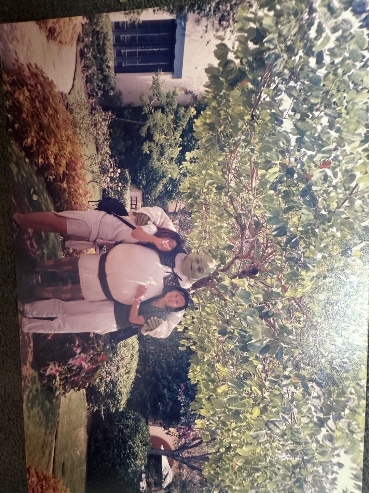
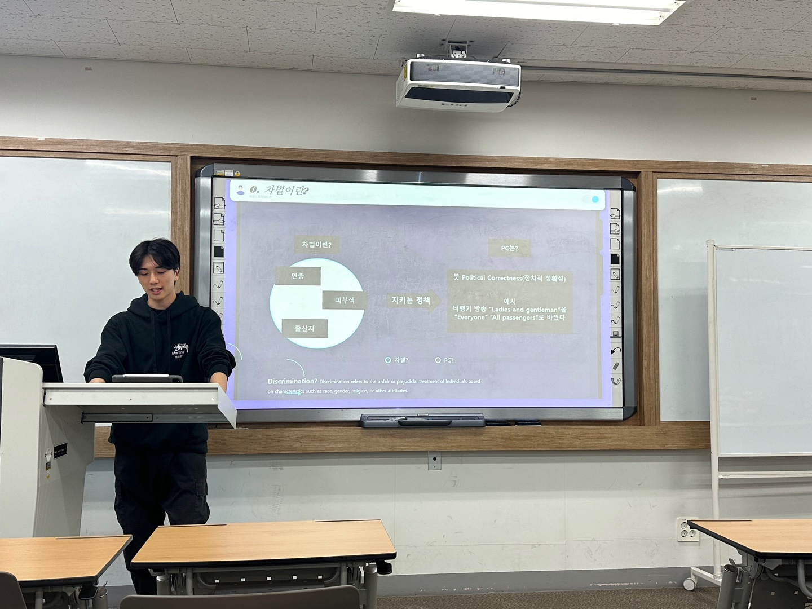

20대 때 목표는 무엇이었나요?
바로, "배워서 남 주자!"입니다. 열심히 공부해서 배운 것으로 다른 사람에게 선한 영향력을 끼쳤으면 좋겠다 싶어서요. 그때부터 가르치는 직업을 하고 싶어서 대학교수가 되려고 한 것 같아요.
유학 시절 인간관계는 어떠셨나요?
20대 때의 인간관계는 정말 다양했어요. 영어를 모국어로 사용하지 않는 나라에서 영어를 공부하러 유학하러 갔는데
일본, 프랑스, 동남아 등 똑같이 영어가 모국어가 아닌 나라에서 온 사람이 많아 언어의 특성에 따라 영어가 다르게 표현되는 것이 흥미로웠죠.
학습을 할 수 있으면 누구나 대학에 다닐 수 있었기 때문에 인간관계가 좋았습니다.
교수라는 직업을 선택하신 계기는 무엇인가요?
학업을 계속 이어가고 싶었기 때문입니다. 4학년 때 학원 강사로 아르바이트하게 되었는데, 직업적으로 매력적이라고 생각했습니다. 2011부터 부산외대에서 강의하고, 경남정보대, 동과기대, 방통대에서도 강의도 하고, 부산중앙도서관, 웅상고등학교 등에서도 인문학 특강을 했습니다.
하지만 여기서 멈추면 안 될 것 같은 느낌이 들어 석사 과정을 시작하게 되었습니다. 아버지는 석사에서 끝내길 바라셨지만, 공부를 계속하다 보니 자연스럽게 박사 과정까지 이어지게 되었죠.
대학교에 있으면 학교가 좋아하는 선생님이 되어야 한다는 말을 들었을 때 충격을 받았습니다. 학생들은 저에게 주어진 선물과 같다고 생각합니다. 선물은 작은 것이라도 기쁘게 받아들이는 법이죠. 교수님에게 학생은 그런 존재입니다. 교수님이 먼저 마음을 열면, 학생들도 그 마음에 반응하게 되죠.
교수 생활을 할 대학교로 부산외대를 선택한 이유는 무엇일까요?
부산외대가 모교이기 때문에 자연스럽게 오게 되었죠.
왜 G2 학과에 오셨을까요?
2017년까지 영어학과에서 수업하던 중, G2 학과에서 사람을 모집한다는 소식을 듣고 지원하게 되었습니다. G2 학과는 언어, 문화, 비즈니스, 무역 등 다양한 분야를 아우르는 인재를 양성하는 학과라는 점이 매력적이었습니다. 중국어학과나 영문학과와는 다르게 단순히 언어만 배우는 것이 아니라, 실용적인 지식과 글로벌 비즈니스에 필요한 역량을 동시에 기를 수 있는 점이 마음에 들었습니다. G2 학과는 2015년에 설립된 학과로, 글로벌 리더를 양성하는 것을 목표로 하고 있으며, 언어는 단지 도구일 뿐, 언어와 함께 비즈니스나 무역을 배우는 것이 중요한 학문적 특성이라 자랑스러운 학과입니다.
교수님만의 수업 방식은 있으실까요?
끊임없이 질문하고, 의견을 나누는 것이요. 기본적으로 문학은 답이 없기 때문에 자신의 의견이 생각으로만 끝나면 안 된다고 생각해요. 검색 등의 행동으로 이어져야 한다고 생각해요. 그 결과를 학생끼리 나누고 제가 마무리 정리를 하는 방식입니다.
학생들에게 바라는 대학 생활방식은 있으실까요?
학생들도 열심히 공부하고 열심히 놀았으면 좋겠죠. 그런 생각으로 김혜진 교수님이 담당하는 수업은, 수업 중 한 번만 별다른 이유가 없이 휴가! 라는 느낌으로 출석을 인정해 줍니다. 그만큼 본인의 삶에 있어서 열정적이었으면 좋겠다는 뜻이 담겨있죠.
휴가권을 주시는 이유는 무엇일까요?
저도 학생 시절 때 열심히 공부하고 열심히 놀았기 때문에 학생들이 공부하는 데 힘든 것을 이해하고 휴식도 취했으면 해서 휴가권을 주려고 노력하는 중입니다.
현재 목표는 있으실까요?
더 열심히 공부해서 더 열심히 가르치고 싶어요! 단순히 가르치는 직업이 아니고 스스로 공부하는 직업이기 때문에 꾸준히 공부하고 책도 내고 있습니다. 그리고 중간고사 준비도 열심히 해야죠!